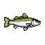
Dace
Quick, silvery and everywhere. The first catch of most mornings.
- Waters
- River
- Size
- 10–20 cm
- Rarity
- Common
- Fight
A WASM-AD cart · Free in your browser
Wander the riverbank, cast into the current or the still pond, and fill your fish log. Nine species, from the tiny dace to the legendary golden salmon, in a pocket fishing game made in the spirit of The Legend of the River King.
←↑↓→ walk X cast / reel Z run Enter fish log · gamepads and touch work too
How to fish
Three steps, a lot of patience, and one decision that matters: when to let the line go slack.
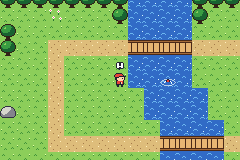
Face the water and press A. Little dips are only nibbles. When the ! appears and the bobber sinks, strike with A before the fish lets go.
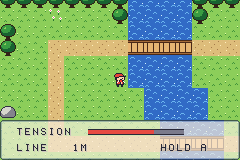
Hold A to reel in. When the fish fights, the meter climbs fast: let go before the line snaps, then reel again as it tires.
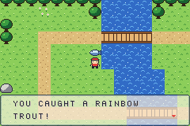
Every catch is measured and goes into your fish log. Beat your best size for a new record; your log is saved on this device.
Fish log
Five live in the river, four in the pond. Strong fish fight harder and give you less time to strike.

Quick, silvery and everywhere. The first catch of most mornings.
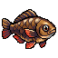
Chunky and curious, it lingers by the bridge pilings.
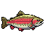
The river's namesake. A pink stripe that flashes when it turns.
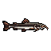
Lurks in deep water and pulls like an anchor.
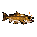
A legend. Some say it only bites at dawn.
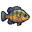
A pond regular with a blue ear flap and a big appetite.
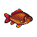
Round and golden, it nibbles before it commits.
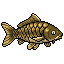
Patient, heavy and stubborn. Don't rush the reel.
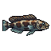
An ambush hunter that shakes its head when hooked.
Controls
| Action | Keyboard | Gamepad |
|---|---|---|
| Walk | ←↑↓→ | D-pad or left stick |
| Run | hold Z | hold B |
| Cast, strike, reel | X (hold to reel) | A (hold to reel) |
| Fish log | Enter | Start |
| Advance text | X or Z | A or B |
On a phone, tap the console to bring it up and use its D-pad and buttons.
Under the hood
Rainbow River is a single WebAssembly module for WASM-AD, a fantasy console with Game Boy Advance–style hardware. It draws by writing tiles, palettes and sprites into memory: the translucent text box is an alpha-blended background layer, the bite ripple a semi-transparent sprite, and the fish you hold up an affine sprite that spins into place.